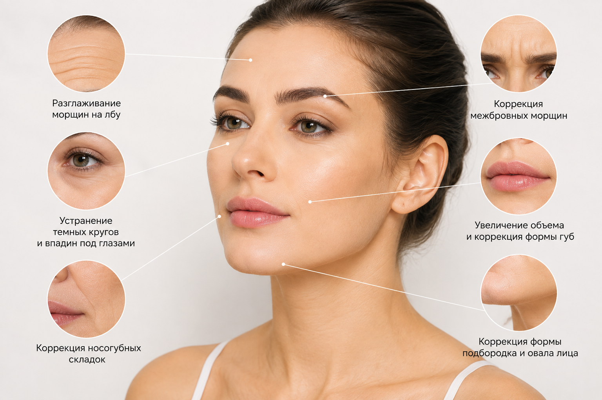

Филлеры для лица: что это такое и когда они действительно нужны?
Современная косметология позволяет скорректировать возрастные изменения и подчеркнуть естественные черты лица без пластической операции. Одной из самых востребованных процедур сегодня является контурная пластика филлерами. С ее помощью можно восполнить утраченный объем, разгладить морщины, скорректировать форму губ и сделать контуры лица более четкими.
В основе большинства современных филлеров лежит гиалуроновая кислота — вещество, которое естественным образом присутствует в организме человека и отвечает за увлажнение и упругость кожи. Именно поэтому препараты на ее основе хорошо совместимы с тканями и постепенно рассасываются естественным путем. Современные филлеры используются для восстановления объема, коррекции морщин и гармонизации пропорций лица.
В ЗимаКлиник контурная пластика входит в перечень инъекционных процедур и проводится только после консультации врача-косметолога с учетом индивидуальных особенностей пациента.
Что такое филлеры для лица?
Филлеры — это инъекционные препараты, которые вводятся в определенные зоны лица для восполнения объема, коррекции возрастных изменений и улучшения контуров.
-
После введения филлер:
- восполняет недостающий объем;
- удерживает влагу в тканях;
- делает кожу более гладкой;
- помогает скорректировать пропорции лица;
- способствует более молодому и свежему внешнему виду.
В отличие от хирургической пластики, процедура не требует наркоза, длительного восстановления и позволяет получить естественный результат уже после одного посещения.
Какие проблемы помогают решить филлеры?
Контурная пластика применяется не только для увеличения губ. Возможности современных препаратов значительно шире.
-
Наиболее частые показания:
- выраженные носогубные складки;
- носослезная борозда;
- потеря объема щек;
- недостаточный объем губ;
- асимметрия лица;
- морщины в области рта;
- возрастная потеря четкости овала лица;
- отдельные виды рубцов после акне.
Правильно подобранный препарат позволяет не изменить внешность, а вернуть лицу естественную гармонию.

Как проходит процедура?
Перед проведением контурной пластики в Севастополе врач обязательно проводит консультацию.
-
Во время приема специалист:
- оценивает анатомические особенности лица;
- определяет зоны коррекции;
- подбирает подходящий препарат;
- рассчитывает необходимый объем;
- исключает противопоказания.
Перед инъекциями на кожу наносится местный анестетик, после чего филлер вводится тонкой иглой или канюлей в заранее определенные области. В среднем процедура занимает 30–60 минут.
Когда виден результат?
Одним из преимуществ контурной пластики является быстрый эффект.
Первые изменения заметны практически сразу после процедуры. В течение нескольких дней препарат равномерно распределяется в тканях, уменьшается возможная небольшая отечность, после чего можно оценить окончательный результат.
В зависимости от препарата, зоны коррекции и индивидуальных особенностей организма эффект обычно сохраняется от 8 до 18 месяцев. После этого гиалуроновая кислота постепенно рассасывается естественным образом.
Безопасны ли филлеры?
Современные филлеры проходят строгий контроль качества и имеют необходимые сертификаты. Однако безопасность процедуры зависит не только от самого препарата, но и от опыта врача.
Именно поэтому проводить контурную пластику следует только в лицензированной клинике, где используются сертифицированные препараты и соблюдаются медицинские стандарты.
Почему важно обращаться к врачу-косметологу?
Иногда пациенты приходят с желанием увеличить губы или убрать морщины, хотя причина возрастных изменений связана с потерей объема в других зонах лица. В таких случаях грамотный врач подбирает комплексную коррекцию, позволяющую добиться максимально естественного результата.
В ЗимаКлиник каждому пациенту разрабатывают индивидуальный план коррекции. Специалисты учитывают возраст, анатомические особенности лица, качество кожи и пожелания пациента. Одним из главных принципов работы клиники является комплексный подход и сопровождение пациента до достижения желаемого результата.
Контурная пластика филлерами в ЗимаКлиник
Если вы хотите скорректировать возрастные изменения, сделать черты лица более гармоничными или подчеркнуть естественную красоту, контурная пластика филлерами в Севастополе поможет решить эти задачи без операции и длительной реабилитации.
На консультации врач-косметолог оценит состояние кожи, расскажет о возможностях процедуры и подберет оптимальный препарат именно для вашей ситуации.